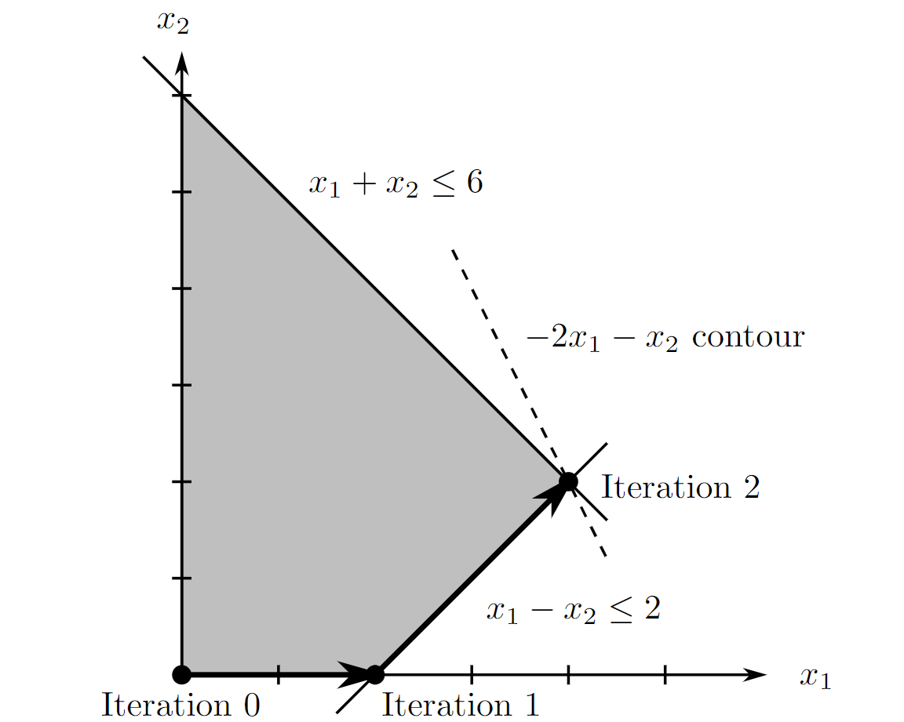
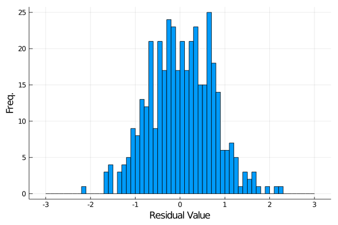
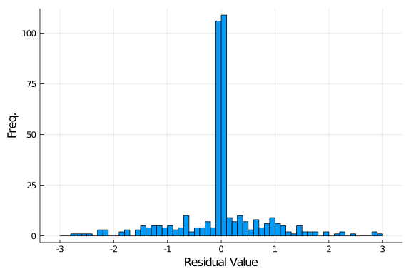
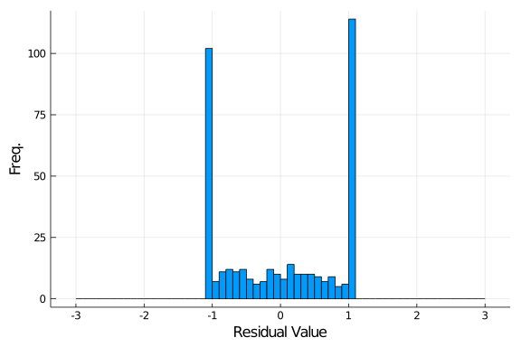

Homework 5 solution¶
-
Conversion to standard form
-
Take \hat A_i = A_i, \hat b_i = b_i whenever b_i \geq 0, and \hat A_i = -A_i, \hat b_i = -b_i whenever b_i < 0.
-
First, reformulate Cx \leq d into Cx + s = d, and s \geq 0 (slack variables). Then take x and write it as a difference of positive terms
\begin{equation*} x = x_p - x_n, \quad \bmat x_p\\x_n\emat \geq 0. \end{equation*}Putting the two together gives
\begin{equation*} \bmat C & -C & I \emat \bmat x_p \\ x_n \\ s \emat = d,\qquad \bmat x_p \\ x_n \\ s \emat \geq 0 \end{equation*}e.g.
\begin{equation*} \hat C = \bmat C & -C & I \emat,\qquad \hat z = \bmat x_p \\ x_n \\ s \emat,\qquad \hat d = d. \end{equation*} -
Without loss of generality, permute the rows of Ax = b and Cx \leq d so that it is equivalently
\begin{equation*} \bmat A_p\\A_n \emat x = \bmat b_p \\ b_n \emat,\qquad \bmat C_p\\C_n \emat x = \bmat d_p \\ d_n \emat. \end{equation*}where b_p \geq 0, b_n \leq 0, d_p \geq 0, and d_n \leq 0. Then the constraints can be written as
\begin{equation*} \bmat A_p & -A_p & 0 \\ -A_n & A_n & 0 \\ C_p & -C_p & I \\ -C_n & C_n & I \emat \bmat x_p \\ x_n \\ s \emat = \bmat b_p \\ -b_n \\ d_p \\ -d_n \emat, \qquad \bmat x_p \\ x_n \\ s \emat \geq 0 \end{equation*}where by construction all the elements on the right hand side are nonnegative.
-
-
-
The corresponding basic feasible solution (including slack/surplus variables) is (x_1,x_2,x_3,x_4)=(0,0,2,6).
-
Begin with the obvious basis:
-
Iteration 0:
\begin{equation*}B = \{3,4\}, \quad z = (-2,-1, 0, 0).\end{equation*} -
Iteration 1: 3 leaves and 1 enters, so that
\begin{equation*}B = \{1,4\}, \quad z = (0,-3, 2, 0).\end{equation*} -
teration 2: 4 leaves and 2 enters, so that
\begin{equation*}B = \{1,2\}, \quad z = (0,0,1/2,3/2),\end{equation*}which is is optimal. Therefore x^*=(4,2,0,0) and the optimal value is -10.
-
-
The graphical representation is:

-
-
-
For \begin{equation} \label{e-lasso} \min_{x}\;|Ax-b|_1, \end{equation}
introduce a dummy variable y where y_k = |a_k^Tx-b_k|. Then \eqref{e-lasso} can be relaxed to
\begin{equation*} \begin{array}{ll} \min_{x,y}& y^Te\\ \st & \max\{(Ax-b)_k,-(Ax-b)_k\} \leq y_k,\;k = 1,\dots\\ \end{array} \end{equation*}where we know that at optimality, the inequality is tight. This can be rewritten as
\begin{equation*} \begin{array}{ll} \min_{x\in \Re^n,\;y\in \Re^n}& \bmat \mb 0\\ e \emat^T \bmat x \\ y \emat \\[3ex] \st & \bmat A & -I \\ -A & -I \emat \bmat x \\ y \emat \leq \bmat b \\ -b \emat. \end{array} \end{equation*} -
The conversion is almost exactly the same, except we use a dummy scalar variable y = \|Ax-b\|_\infty. Then the problem
\begin{equation} \label{e-max} \min_{x}\;\|Ax-b\|_\infty \end{equation}may be relaxed to
\begin{equation*} \begin{array}{ll} \min_{x,y}& y \\ \st & \max\{(Ax-b)_k,-(Ax-b)_k\} \leq y,\;k = 1,\dots \end{array} \end{equation*}which we can rewrite as
\begin{equation*} \begin{array}{ll} \min_{x\in \Re^n,\;y\in \Re}& \bmat \mb 0\\ 1 \emat^T \bmat x \\ y \emat \\[3ex] \st & \bmat A & -e \\ -A & -e \emat \bmat x \\ y \emat = \bmat b \\ -b \emat \end{array} \end{equation*} -
using LinearAlgebra, Statistics, Random, Plots, GLPK, Convex Random.seed!(1) m = 400 n = 200 A = randn(m,n) b = randn(m); ## least squares solution x_ls = A\b; res_ls = A*x_ls-b; histogram(res_ls,bins=-3:.1:3,xlabel = "Residual Value", ylabel = "Freq.", legend = false) ## sparse residual x = Variable(n+m); c = [zeros(n);ones(m)]; Alin = [A -I(m); -A -I(m)]; blin = [b;-b]; problem = minimize(c'*x, [Alin*x <= blin]) solve!(problem, GLPK.Optimizer) res_l1 = A*x.value[1:n]-b histogram(res_l1,bins=-3:.1:3,xlabel = "Residual Value", ylabel = "Freq.", legend = false) ## robust residual x = Variable(n+1); c = [zeros(n);1]; Alin = [A -ones(m,1); -A -ones(m,1)]; blin = [b;-b]; problem = minimize(c'*x, [Alin*x <= blin]) solve!(problem, GLPK.Optimizer) res_linf = A*x.value[1:n]-b; histogram(res_linf,bins=-3:.1:3,xlabel = "Residual Value", ylabel = "Freq.", legend = false) -
The \infty norm \eqref{e-max}, since it minimizes worst case error.
-
The 1 norm \eqref{e-lasso}, since it optimizes for many 0's but allows for a few (very bad) outliers.
-